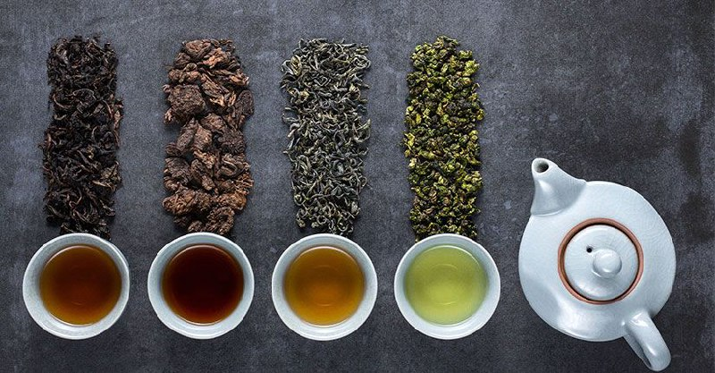

Чай — це не просто напій, це ціла культура, що існує протягом тисячоліть і об'єднує людей по всьому світу. Залежно від регіону, традицій і способу обробки, чай може мати безліч смаків і ароматів. Це напій, який дарує насолоду, заспокоює, бадьорить і надихає.
-
Існує дуже багато видів чаю, наприклад:
- Зелений чай — один з найдавніших видів чаю, який славиться своїми корисними властивостями. Завдяки мінімальній ферментації, він зберігає максимум антиоксидантів і природних компонентів, що робить його відмінним засобом для підтримки здоров'я і енергії.
- Чорний чай — найбільш популярний вид чаю в світі. Він проходить повну ферментацію, що надає йому насичений смак і глибокий колір. Чорний чай добре поєднується з молоком і цукром, що робить його основою багатьох національних традицій чаювання.
- Матча (Маття) — японський зелений чай, який подрібнюється до стану порошку. Завдяки високому вмісту L-теаніну, цей чай заспокоює і одночасно покращує концентрацію, а його яскравий смарагдовий колір робить його візитною карткою японської культури.
- Пуер — унікальний китайський чай, що зазнає тривалої ферментації та дозрівання. Його смак розвивається з часом, набуваючи глибоких і складних відтінків. Пуер відомий своїм позитивним впливом на травлення і є важливою частиною китайської чайної традиції.
- Улун (Оолонг) — напівферментований чай, що поєднує в собі найкращі властивості зеленого і чорного чаю. Його смак варіюється від ніжного квіткового до насиченого фруктового, а складний процес виробництва надає йому особливу цінність.
- Каркаде — яскравий чай з пелюсток суданської троянди, що популярний у тропічних країнах. Його кислувато-солодкий смак освіжає і тонізує, а насичений червоний колір робить його візуально привабливим.
Чай — це більше ніж просто напій. Це спосіб знайти гармонію, відновити сили і насолодитися миттю спокою серед метушні сучасного світу.
Ось цікава мапа чаїв: 